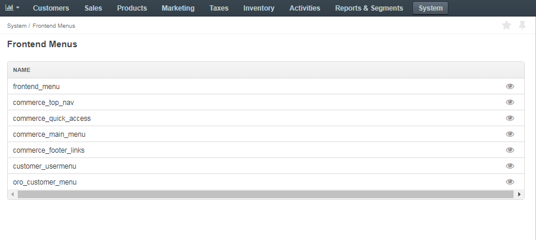
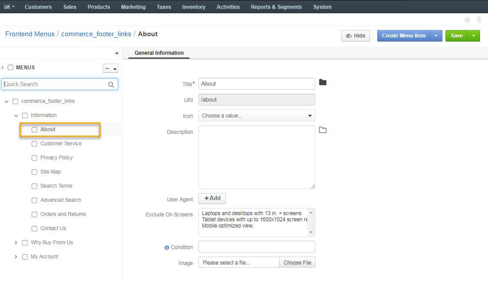
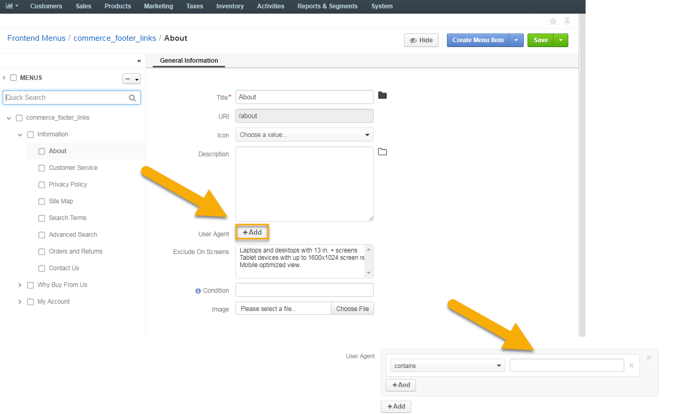
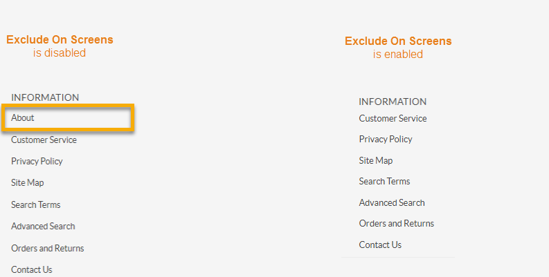
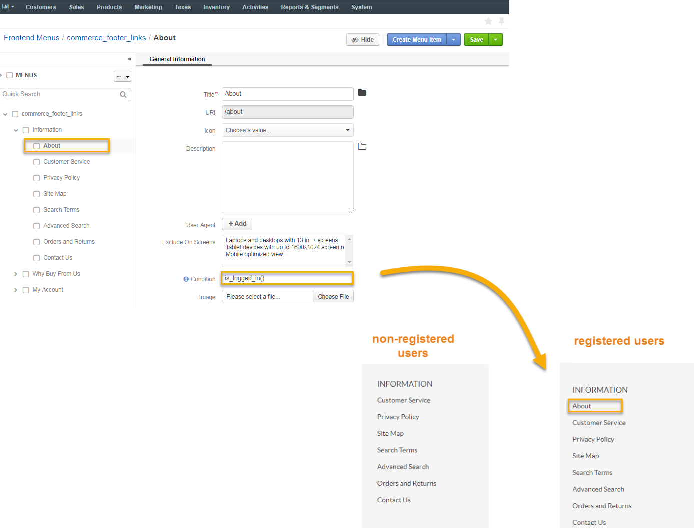
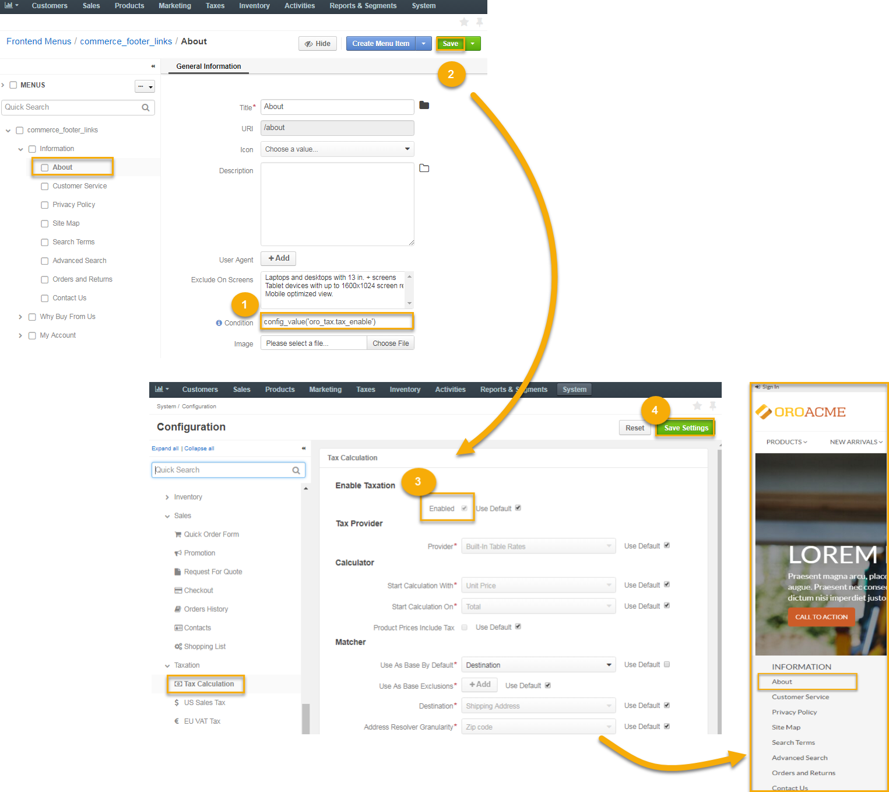
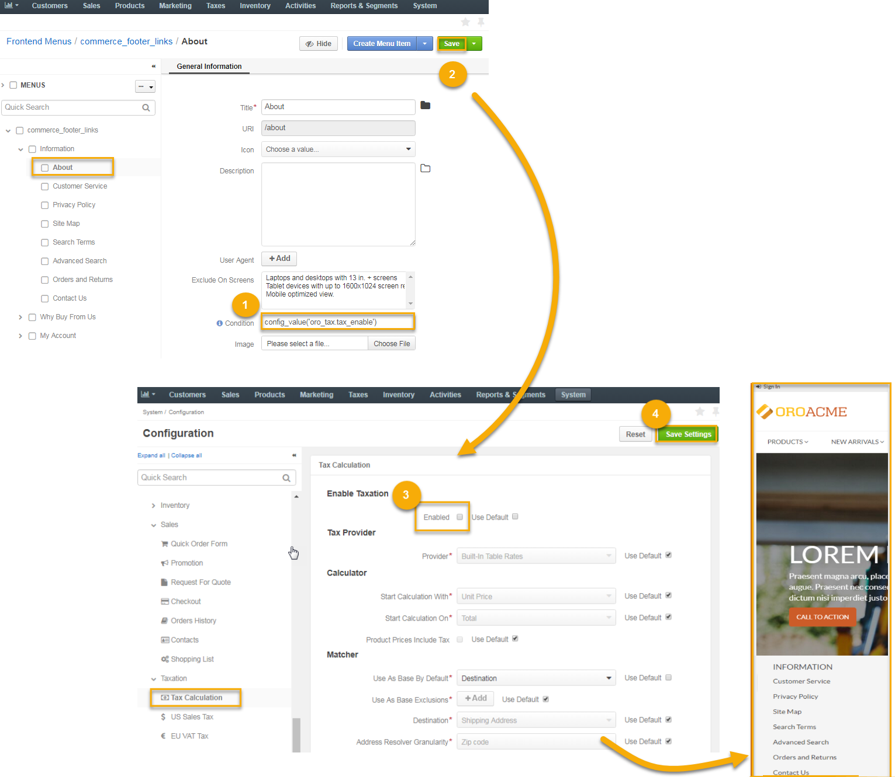

To update the frontend menu contents, follow the Customize Default Frontend Menus guide and click the menu name or on the View icon in the corresponding row of the frontend menu list.
On the page that opens, the menu item tree is shown in the left panel. The General Information section is reserved for the menu item configuration, which you can update, as shown in the Add a Menu Item section.
Moreover, you can customize additional visibility restrictions in the following fields in order to selectively display or hide some menu items from the customer:
User agent is unique to every customer. It reveals a catalog of technical data about the device and software that the customer is using. You can control whether to show or hide some menu items from the customer by proceeding with the following steps:
The following text field displays:
Note
A user agent string is a combination of user agent application versions, operating systems, crawlers, and other scripts which are specific for each user (e.g. Mozilla/5.0 (Windows NT 6.1; Win64; x64) AppleWebKit/537.36 (KHTML, like Gecko) Chrome/60.0.3112.113 Safari/537.36).
A user agent substring is a part of the aforementioned string (e.g. Mozilla, Windows, Safari, etc).
Select the corresponding operation from the list.
To create more advanced condition, you can combine constrains into the expression using logical AND and OR operators:
Click + And below the operation field within the same block to add another constrain block into the expression via AND.
AND operation means that only those user agents that comply with all the specified conditions in a group will be selected.
Click + Add at the bottom of the expression block to add another constrain block into the expression via OR.
OR operation activates the expression once any of the constraint blocks in a group evaluates to true.
Exclude On Screens enables you to hide the menu items on the specified screens sizes.
As an illustration, let us hide the About menu item from the desktops with 13 in. screen by enabling Exclude On Screens and selecting the corresponding screen size.
Condition enables you to restrict visibility of a menu item using the following functions:
The is_logged_in() function stands for the registered users. If entered, only the users who have logged into the Oro storefront are enabled to view the corresponding menu item.
The !is_logged_in() function stands for the non-registered users. If entered, only the unregistered users are enabled to view the corresponding menu item.
The config_value(‘some_identifier’) function limits visibility of the corresponding menu item upon specifying the certain value instead of ‘some_identifier’.
As an example, let us make the About section in the storefront visible to customers with configured taxes. For this, we need to:
The steps are illustrated below:
 
{kind=link}
{kind=link}